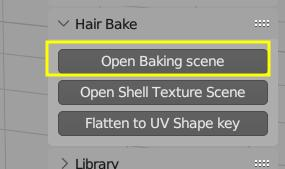

Baking Hair Textures¶
 Built-in hair baking scene, that comes with Hair Tool. You can select output path, file name, resolution, bake quality etc.
Built-in hair baking scene, that comes with Hair Tool. You can select output path, file name, resolution, bake quality etc.
Baking Template consist of few objects with Hair Systems attached to them. Tweak these Hair Systems, to get desired result.
Note: For proper bake, template uses Round Profile type.
Loading Baking Template¶
 Load baking template using: right Sidebar > Hair Tool > Hair Bake panel
There are two options to load baking template:
- Open baking template as new file, and setup adjust hair there (save your current file before opening baking file)
- Load baking template to your working file - using 'Import Baking Scene' button - this will add 'BakingHair' scene to your file
Available Passes¶
 Example of baked hair passes - diffuse, AO, opacity etc.
Example of baked hair passes - diffuse, AO, opacity etc.
- Diffuse
- AO
- Normal Map
- Opacity Mask
- Root Mask - black to white gradient that goes from root to tip
- Random ID - give random gray value to each strand
- Random Parent - give random color based on strands Parent ID
- Random ID - give random color to each strand
- Flow Map - perturbs tangent vector - useful for driving anisotropic specular direction
- Direction Map - alternative to Flow Map. May give slightly better results
- Depth - use empty named 'Depth_Driver' to control depth range of the pass
Note: You can select multiple passes by shift clicking on them, to bake them all at once. All objects that are inside bake collection (by default it uses 'Hair For Bake' collection) will receive proper material pass automatically
Tweaking Hair¶
Example of tweaking hair systems in baking template
Most of the hair objects are build from three Hair Systems (first and third are shared between most of the objects, so that you can tweak them all at once):
- ClumpGen - Strands Generator > bit of Noise > tiny bit of Clump (to compensate hair spreading due to noise)
- Filter: Del - remove some of the strands generated above - to control how thick hair looks. This HSystem is different for each object, so you can adjust it to your liking.
- SharedTrim - Finally, we trim some strands randomly and give the hair a more natural taper at the roots and ends.
Previewing Bake Result¶
Baking file has hair curve object named 'Haircard_preview_curve', with PreviewBakeMat material assigned to its profile. After pressing 'Bake', the output textures will be automatically applied to this material, so you can preview baking output maps.
On the left: hair curves used for bake; on the right: haircars with baked texture applied
Video Tutorial¶
Video above (at 47:07 timestamp) shows: baking new texture, previewing bake result and updating hair UVs, importing textures into your hair material
Baking Textures¶
To bake hair texture:
- Save current blend file.
- Press 'Open Baking scene' button located in right UI Sidebar(N): "Hair Tool" tab > 'Hair Bake' panel. New scene will be loaded, with example hair setup ready to be baked (you may want to save this template scene as new blend file, to avoid overriding the 'master' template)
- The 'Hair Bake' panel will contain new options. Enable bake passes with Shift+click on multiple the bake passes buttons that you want to bake
- Set output path for baked textures, resolution, bake name etc.
- Press 'Bake Hair' button to bake selected passes
You can customize suffix given to each pass output texture name in addon preferences -> Baking Tab.
Texture channel mixing¶
 Custom texture node editor - where you can pack baked maps into new texture RGBA channels
Custom texture node editor - where you can pack baked maps into new texture RGBA channels
Note:If you enable button 'Composite channels', Hair Tool will automatically create node setup with input textures from baked images, after baking is finished.

Flatten to UV Shape¶
Create flattened version of hair, from base mesh UVs. Useful when you want to bake hair system, without having to convert hair to mesh . To un-flatten object run this operator again
On left we have Hair System attached to Suzane, we flatten it using UVMap. On right you can see result of baking that flat shape to texture
Note1: For baking flattened hair use baking scene setup.
Baking scalp mask¶
There is no option in Blender to bake hair to mesh (it supports only mesh-to-mesh baking), and I could not find any for that purpose. So here is my custom solution, called Cycles Baker.
The setup:
* Install Cycles Baker as Extension from Blender Preferences > Get Extensions > Install From Disk (dropdown menu at the very top right corner)
* Right Sidebar > Tools > Cycles Baker tab: use 'Add Pair' button and pick low-poly scalp mesh and high-poly hair object
* Add needed baking passes (e.g. Diffuse, AO, Opacity, Depth etc)
* Make sure to set hair profile to Round.
* Press 'Bake'